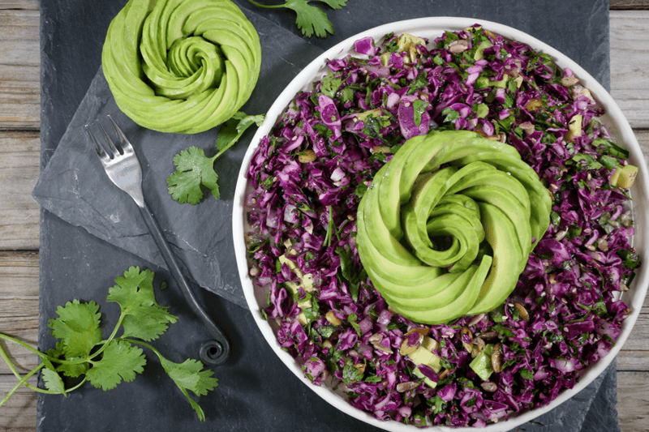
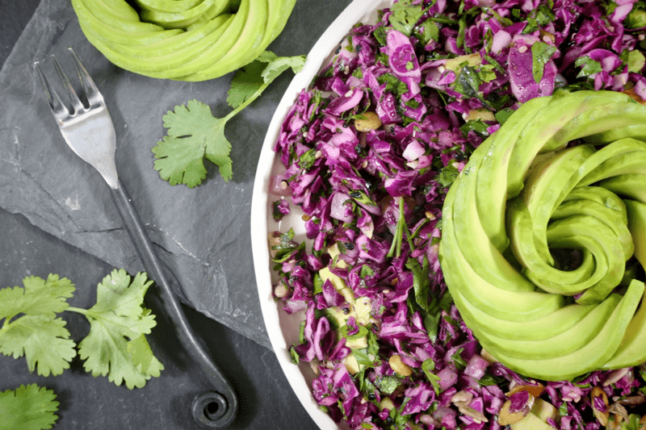

I really love my liver. I mean who couldn’t love that three-pound, size of a football, organ that is nestled in our upper rib cavity? It handles over five-hundred functions in the body which include breaking down or converting substances, extracting energy, and removing toxins from the bloodstream. It stores vitamins as well as minerals such as copper and iron, releasing them if the body needs them. The liver also helps to break down fats which it either stores or releases as energy.

A little over a year ago I was diagnosed with Nonalcoholic fatty liver disease. I was just as shocked as anyone else but none the less, the symptoms fit and blood tests proved confirmed. I went on a mission to heal my liver through supplements, foods, and emotional work. They all worked hand in hand but I found the emotional work to be the caveat that really helped me reverse this diagnosis.
Within about eight months my liver healed. It has been almost a year now and with continual blood draws my liver still proves to be strong and healthy. So to this day, I still make sure that I take in foods that support the health of my liver as well as removing those that cause it to struggle. That is why this salad so dear to my heart liver. But don’t just take my word for it, let’s dig into some of these amazing ingredients that I pulled together.
Red Cabbage
Purple cabbage contains phytonutrients which makes it an excellent anti-inflammatory food. It is a great food for the detoxification and elimination of harmful chemicals and hormones found in food, water, and air pollutants. The vegetable’s waste removing abilities are particularly beneficial to the liver, the digestive tract, and the colon.
Parsley
Most people are familiar with parsley as a food garnish that’s used as a mere decoration and usually discarded. But, did you know that when it comes to herbs that promote body cleansing… parsley is one of them? Parsley acts as a natural diuretic and since your urine is a route through which toxins are expelled from your body… incorporating parsley will help this natural process along. It is also a strong liver supporter, particularly in the presence of diseases like diabetes and liver disease.
It is incredibly rich in vitamin K as well as A, C, and several B vitamins. In order to get the most of what parsley has to offer, make sure that you seek out organic only. Since we are looking to enjoy this salad to help cleanse it, why add all those nasty pesticides and chemicals back into our bodies?!
Onions
They might make you cry but onions also come packed with cancer-fighting compounds. Yellow onions, for example, have been found to protect our bodies against liver and colon cancers. (1)

Avocado
The soft, yellow-green, creamy flesh of an avocado is loaded with different kinds of health benefits, its healthful fats, anti-inflammatory, and antioxidant properties make it a superstar for those defending a compromised liver. Avocados can help your body produce a type of antioxidant called glutathione which is needed for our livers to filter out harmful materials.
Cold-Pressed Extra Virgin Olive Oil
Thanks to powerful antioxidants known as polyphenols, extra virgin oil is considered an anti-inflammatory food and cardiovascular protector. And let’s not forget to mention that it has positive effects on the liver (6). This organ is vital to the body’s metabolic functions, immune system, and 500 other bodily functions. Let’s show our liver some loooove. With all that said, I also added the olive oil because it helps our bodies absorb fat-soluble vitamins K and A found in the parsley.
Sesame Seeds
I added sesame seeds because they add a nutty taste and a delicate, almost invisible, crunch. But that’s not the only reason… They contain sesamin, a substance found to protect the liver from oxidative damage. (1) They also contain calcium and if this is an area that you are looking to increase, toast the seeds first. For more texture, I popped in some pumpkin seeds which are high in selenium and minerals and are required co-factors for detoxification.
So, whether you have liver issues or not, it would be a grand idea to eat foods to support it. It works extremely hard for you and it deserves some love. I do want to point out that if you have a hard time digesting raw cabbage, you can lightly sautee this recipe on the stovetop. Just be sure to add the parsley towards the end of the cooking and toss in the avocado when ready to serve.
Ingredients
Salad Base
- 1 medium head (515 g) red cabbage, shredded
- 1 bunch (137 g) flat-leaf parsley, finely chopped
- 1/2 cup (115 g) white onion, finely chopped
- 1/2 cup (75 g) mixed seeds (pumpkin seeds, sunflower seeds, sesame seeds)
Dressing
- 1/3 cup (80 g) extra-virgin olive oil
- 1/4 cup (54 g) fresh lemon juice, plus more to taste
- 1/2- 1 tsp (4-8 g) pink Himalayan salt, to taste
- 2 tsp (1 g) dried dill
- 1/4 tsp (1 g) freshly ground black pepper
- large avocado
Preparation
Salad Base